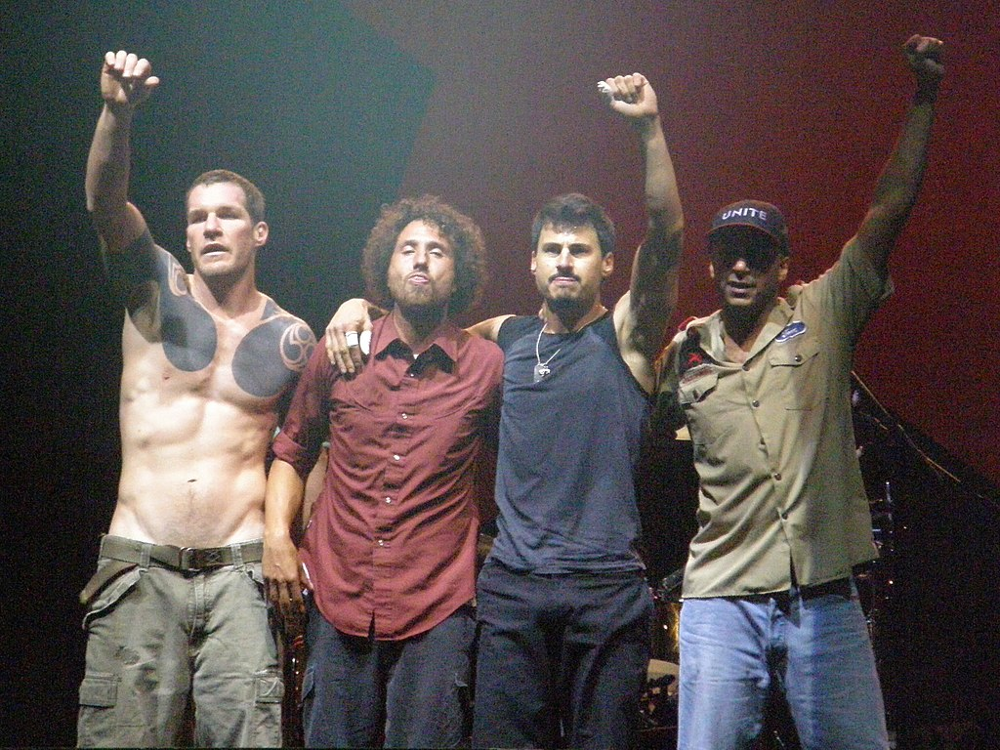

Músicos que me gustan
Led Zeppelin

Led Zeppelin fue un grupo británico de rock fundado en Londres en 1968 por el guitarrista Jimmy Page.
Pearl Jam

Pearl Jam es un grupo de grunge formado en Seattle, Estados Unidos, en el año 1990, con integrantes de las bandas Mother Love Bone y Temple of the Dog.
RATM
Rage Against the Machine (a menudo abreviado como RATM o Rage) fue un grupo de rock estadounidense de Los Ángeles, California. Formado en 1991, el grupo estaba compuesto por el vocalista Zack de la Rocha, el bajista y corista Tim Commerford, el guitarrista Tom Morello y el batería Brad Wilk.
Canciones que me gustan
Alice In Chains - Don't Follow
Bad Religion - 21st Century (Digital Boy)
Led Zeppelin - Custard Pie